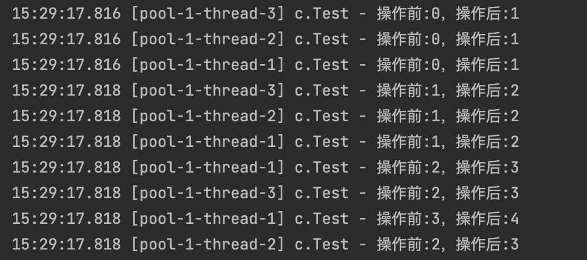
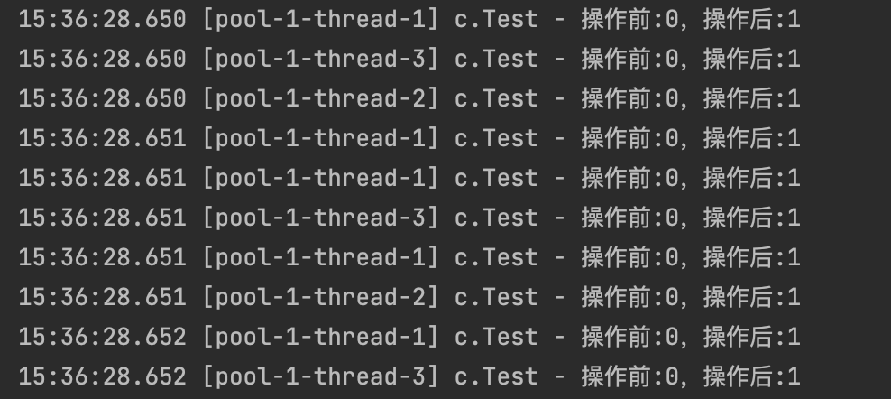
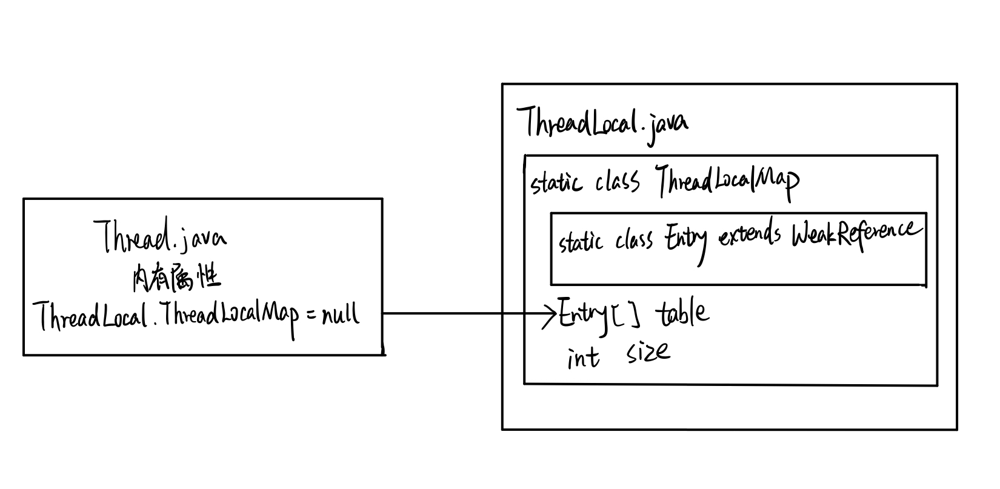
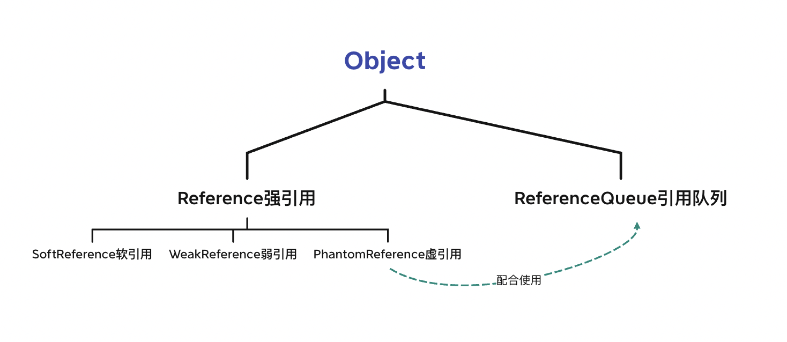
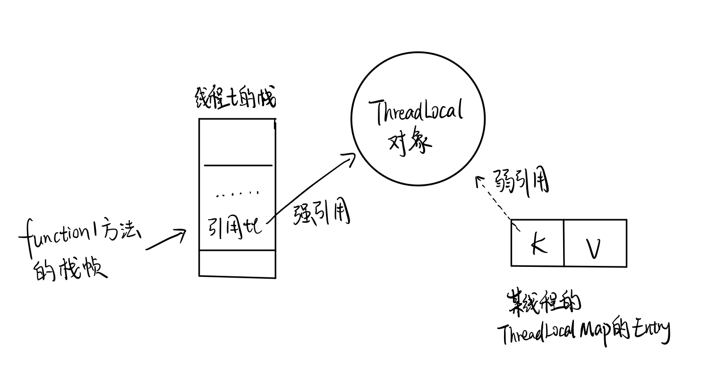

JUC-ThreadLocal
5. 共享模型之无锁
5.3 ThreadLocal
ThreadLocal提供线程局部变量，这些变量与正常的变量不同，因为每一个线程在通过其get set方法访问ThreadLocal实例时，都有自己独立初始化的变量副本。ThreadLocal实例通常是类中的私有静态字段，使用它的目的是希望将状态（如用户ID、事务ID）与线程关联起来。
5.3.1 ThreadLocal能干什么
ThreadLocal实现每一个线程都有自己专属的本地变量副本，自己用自己的变量，不和别人共享。
主要解决了让每个线程绑定自己的值，通过get()和set()方法，获取默认值或将其值更改为当前线程所存的副本的值，从而避免线程安全问题。
简单来说，就是每个线程记录只属于自己的东西，不用写回主内存。因为人手一份，也不用加锁了。
5.3.2 应用：销售卖房
需求1：5个销售卖房，公司只关心他们的销售总数。
需求2：每个销售的业绩独立计算，才能计算提成。
1 | class House{ |
5.3.3 remove()
阿里开发手册强制规定，必须回收自定义的ThreadLocal变量，尤其在线程池场景下，线程经常会被复用，如果不清理自定义的ThreadLocal变量，可能会影响后续业务逻辑并造成内存泄漏等问题。尽量在代理中使用try-finally块进行回收。
在上例中每个线程都是new创建的，内存泄漏的问题不明显。看一个线程池的例子：
1 | class MyData{ |
在没有remove回收的情况下，输出：

出现内存泄漏的问题。
内存泄漏：不再会被使用的对象或变量占用的内存不能被回收，就叫内存泄漏
1 | try { |
remove回收后，输出：

5.3.4 Thread / ThreadLocal / ThreadLocalMap

Thread类中有一个属性ThreadLocal.ThreadLocalMap = null，ThreadLocalMap是ThreadLocal类的静态内部类，ThreadLocalMap内部有一个静态内部类Entry继承自WeakReference即弱引用。
ThreadLocalMap从字面上就可以看出这是一个保存ThreadLocal对象的map，不过这个ThreadLocal对象是经过两层包装的：
- 第一层包装是使用WeakReference<ThreadLocal<?>>将ThreadLocal对象变成一个弱引用对象。
- 第二层包装是定义了一个专门的类Entry来扩展WeakReference<ThreadLocal<?>>。
1 | static class ThreadLocalMap { |
ThreadLocalMap实际上就是一个以threadLocal实例为key，任意对象为value的Entry对象：
1 | void createMap(Thread t, T firstValue) { |
ThreadLocal本身不存储值，它只是一个壳，真正的存储结构是ThreadLocal里的ThreadLocalMap内部类。当我们为threadLocal变量赋值（调用set方法），实际上就是往ThreadLocalMap设置值，key是ThreadLocal对象，value是传递进来的对象。调用get方法，实际上是从ThreadLocalMap获取值，key是ThreadLocal对象。
Thread就好比一个人，ThreadLocal是一张身份证，作为载体，ThreadLocalMap是身份证上的信息，存储在身份证这张卡片上，是保存ThreadLocal对象的map。
5.3.5 强引用
JVM里关于引用的整体架构：

当内存不足Out Of Memory时，JVM开始垃圾回收，对于强引用的对象，就算出现了OOM也不会回收该对象。
强引用是最常见的普通对象引用，Java中最常见的就是强引用，把一个对象赋给一个引用变量，这个引用变量就是一种强引用。只要还有强引用指向一个对象，就表明该对象还活着，处于可达状态，即使该对象以后永远都不会被用到，垃圾收集器也不会碰这种对象。因此强引用是造成Java内存泄漏的主要原因之一。
对于一个普通的对象，如果没有其他的引用关系，只要超过了引用的作用域或者显式地将相应强引用赋值为null，一般认为就是可以被垃圾收集的了。
1 | public static void main(String[] args) throws InterruptedException { |
输出：
1 | 17:50:43.036 [main] c.Test - before gc:java.lang.Object@63e31ee |
5.3.6 软引用
软引用是一种相对强引用而言弱化了一些的引用，需要用Java.lang.ref.SoftReference类来实现，可以让对象豁免一些垃圾收集。对于只有软引用的对象来说，当系统内存充足时，它不会被回收；当系统内存不足时，它会被回收。软引用通常用在对内存敏感的程序中，比如高速缓存，内存够时就保留，不够用就回收。
1 | public static void main(String[] args) throws InterruptedException { |
输出：
1 | 18:27:35.985 [main] c.Test - 内存够用:java.lang.Object@63e31ee |
vm添加参数-Xms10m -Xmx10m，开始内存10MB，最大内存10MB，测试内存不够用时：
1 | public static void main(String[] args) throws InterruptedException { |
内存不够用了，输出：
1 | 18:26:49.863 [main] c.Test - 内存够用:java.lang.Object@63e31ee |
应用场景：
假如有一个应用需要读取大量本地图片，如果每次读取图片都从硬盘读取则会严重影响性能，如果一次性加载到内存又可能造成内存溢出，此时可以使用软引用。
设计思路是：用一个HashMap保存图片的路径和相应图片对象关联的软引用之间的映射关系，内存不足时，JVM会自动回收这些缓存图片对象所占用的空间，从而避免OOM的问题。
Map<String, SoftReference<Bitmap>> imageCache = new HashMap<String, SoftReference<Bitmap>>();
5.3.7 弱引用
弱引用需要用Java.lang.ref.WeakReference来实现，它比软引用的生存期更短。
对于只有弱引用的对象来说，只要垃圾回收机制一运行，不管JVM的内存空间是否足够，都会回收该对象占用的内存。
5.3.8 虚引用
- 虚引用必须和引用队列ReferenceQueue联合使用。
虚引用需要用Java.lang.ref.PhantomReference来实现。顾名思义，就是形同虚设，虚引用并不会决定对象的生命周期。如果一个对象仅持有虚引用，那么它就和没有任何引用一样，在任何时候都可能被垃圾回收器回收。它不能单独使用，也不能通过它访问对象，虚引用必须和引用队列联合使用。虚引用的对象被回收后，会被装到引用队列中。
- PhantomReference的get方法总是返回null。
虚引用的主要作用是跟踪对象被垃圾回收的状态。仅仅提供了一种确保对象被finalize之后，做某些事情的通知机制。PhantomReference的get方法总是返回null，因此无法访问对应的引用对象。
- 处理监控通知使用。
设置虚引用关联对象的唯一目的，就是在这个对象呗收集器回收时，收到一个系统通知或后续添加进一步的处理，用来实现比finalize更灵活的回收操作。
5.3.9 Entry为什么要用弱引用
1 | public void function1(){ |
function1方法新建了一个ThreadLocal对象，tl是强引用指向这个对象。调用set方法后新建了一个Entry，通过源码可知Entry对象里的key是弱引用指向这个对象。

当function1方法执行完毕，栈帧销毁后强引用tl也就没有了。但此时线程的ThreadLocalMap里某个Entry的key引用还指向这个对象。
- 如果这个key引用是强引用，就会导致key指向的ThreadLocal对象以及v指向的对象不能被gc回收，造成内存泄漏。
- 如果这个key引用是弱引用，就可以使ThreadLocal对象在方法执行完毕后顺利被回收，且Entry的key引用指向null，大概率减少内存泄漏的问题。
沿用之前人、身份证、身份信息的比喻。如果是强引用，人死了之后身份信息还存在着，无法被销毁，就会导致身份信息不断累积。如果是弱引用，人死了之后，身份信息就可以被注销。
5.3.10 弱引用也会造成内存泄漏
从5.3.9我们可知，当threadLocal外部强引用tl被置为null，那么系统GC的时候就必定会回收这个threadLocal。这样一来，ThreadLocalMap中的Entry就会出现一对key为null的kv对，就没有办法访问这些key为null的value，如果这个线程迟迟不结束（比如线程池一直复用这个线程），这些key为null的value就会一直存在一条强引用链：Thread Ref -> Thread -> ThreadLocalMap -> Entry -> value永远无法回收，导致内存泄漏。
如果当前线程运行结束，threadLocal，threadLocalMap，Entry没有引用链可达，在GC时都会被系统回收。
但在实际使用中会使用线程池去维护线程，一直复用线程的话是不会结束的。因此弱引用不能100%保证内存不泄漏。我们要在不使用某个ThreadLocal对象后，手动调用remove方法删除它。
通过ThreadLocal的set()、getEntry()、 remove()方法源码可以看出，在ThreadLocal生命周期里，针对内存泄漏的问题，都是通过expungeStaleEntry()方法，判断如果key==null，就把对应的value也置为null，达到清除脏Entry的效果。
1 | private int expungeStaleEntry(int staleSlot) { |
5.3.11 使用时注意
- 必须初始化：
ThreadLocal.withInitial(()->初始化值); - 建议用static修饰ThreadLocal变量，因为这个变量是针对一个线程内所有操作共享的，所有此类实例共享此静态变量，只需要类第一次使用时被加载，只分配一块存储空间就够了。
- 用完必须手动remove。